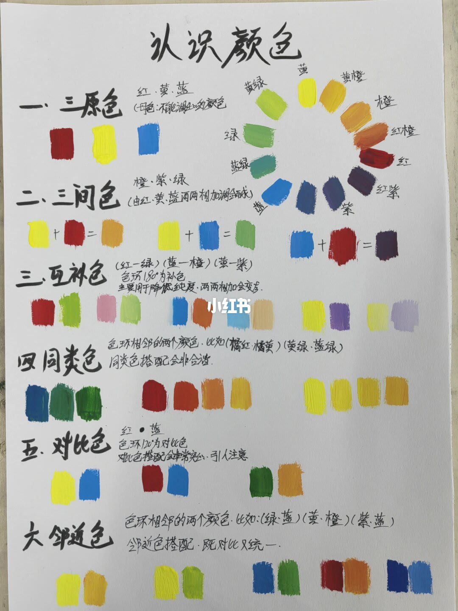
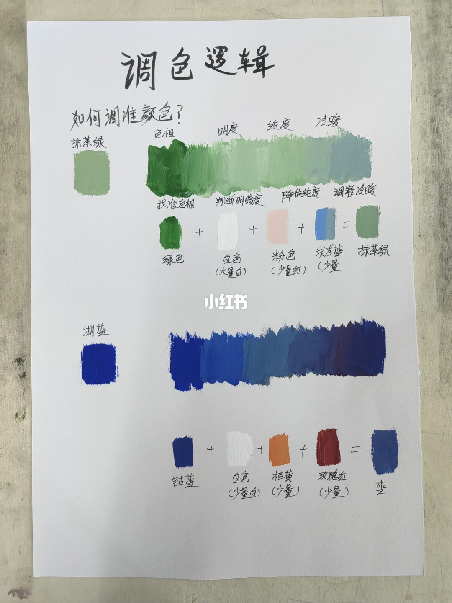
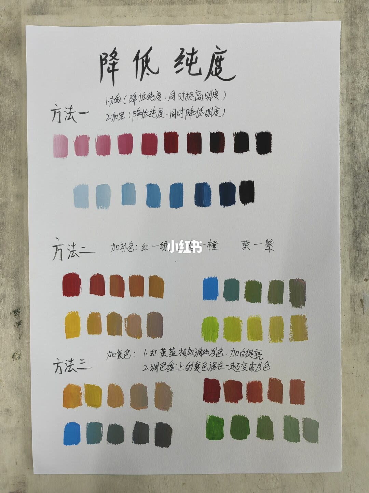
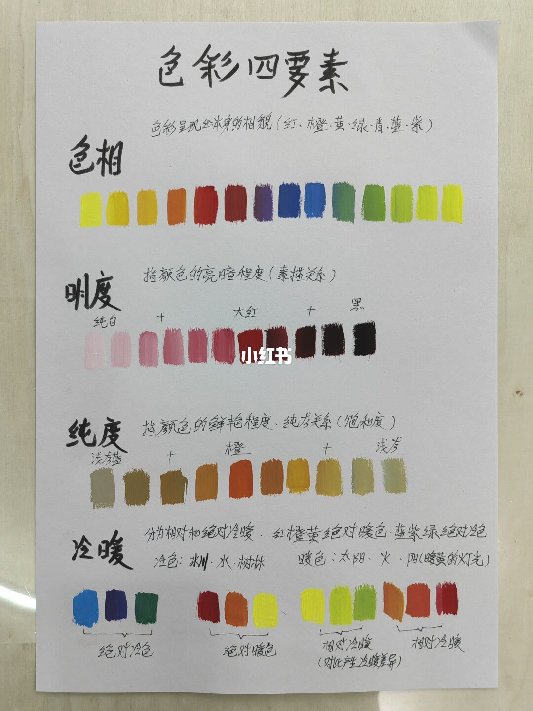
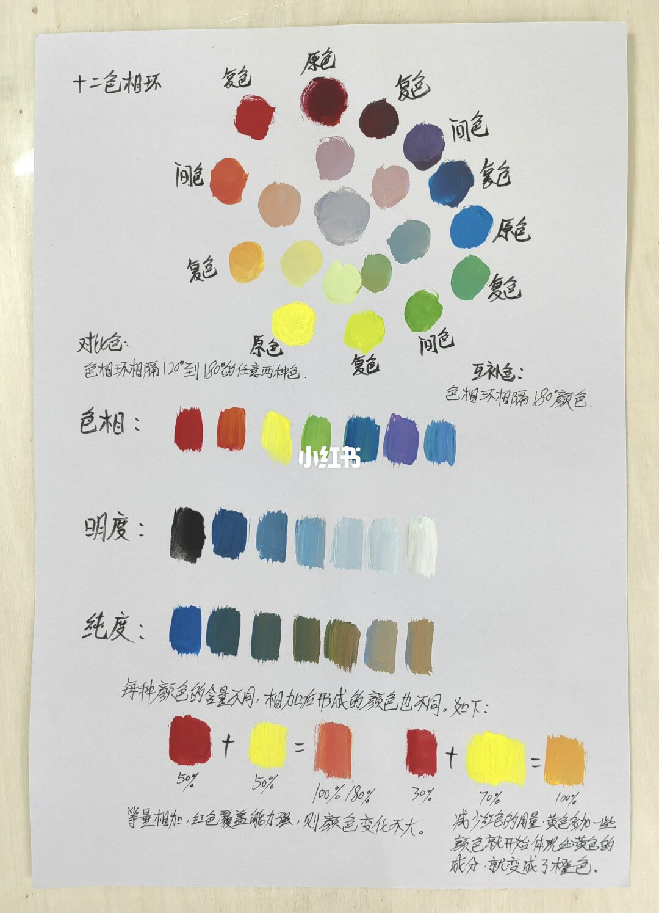
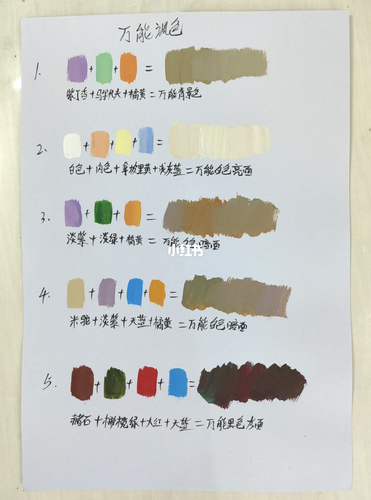

图文实录 · 小红书 · 笔尖造梦水彩
谁懂啊，终于有人把认识颜色说清楚了…
六页把认识颜色收成关系、调色顺序、降纯度和四要素，再给十二色相环和五条灰调配方。说清楚的是动手顺序：先定色相，再动明度、纯度、冷暖。角度定义前后并不一致，第 6 页还有几处字无法确认。
1/6
认识颜色
页首是「认识颜色」，右上有一圈手绘色环。能读出的标签有黄、黄橙、橙、红橙、红、红紫、紫、蓝、蓝绿、绿、黄绿；其中一格标签看不清。
一、三原色：红、黄、蓝，注明是不能调出来的颜色，下面三块色。二、三间色：橙、紫、绿，由红、黄、蓝两两相加。图上是黄加红得橙，黄加蓝得绿，蓝加红得紫。三、互补色：（红—绿）（蓝—橙）（黄—紫）。正文写色环 180° 为补色，主要用于降低纯度，两两相加会变灰。每对旁边都有一块混出来的灰浊色。
四、同类色：写成色环相邻的两个颜色，例子是橘红·橘黄、黄绿·蓝绿，搭配会非常和谐。色块是三组相近色，不只是两两一对。五、对比色：点名红·蓝，色环 120° 为对比色，搭配强烈、引人注意。图上还有黄对蓝、绿对橙。六、邻近色：也写成色环相邻的两个颜色，例子是绿·蓝、黄·橙、紫·蓝，搭配既对比又统一。

2/6
调色逻辑
标题「调色逻辑」，副题「如何调准颜色？」。两条示范都按色相、明度、纯度、冷暖往下走。
抹茶绿：先一块绿，再大量白，再一小块粉（旁注接近「少量红」），再少量浅灰蓝，等于抹茶绿。粉字后的具体用字无法完全确认。湖蓝：钴蓝，少量白，少量桔黄，少量玫瑰红，结果色块标回蓝。降纯度用的是对面或近对面的颜色，不是直接加一块灰。

3/6
降低纯度
方法一：加白，降低纯度，同时提高明度；加黑，降低纯度，同时降低明度。红和蓝各有一排从浅到深的色块。方法二：加补色，仍是红—绿、蓝—橙、黄—紫。四组色条从鲜色走到发灰。方法三：加复色。第一条写红黄蓝相加调出灰色，加白提亮。第二条写调色盘上的复色混在一起变成灰色。橙、蓝、红、绿四组色条各自变闷。

4/6
色彩四要素
色相：色彩呈现出来的相貌，括注红、橙、黄、绿、青、蓝、紫，下面一排色块。明度：颜色的亮暗程度，括注素描关系。图是纯白加到大红，再加黑，红从浅粉到近黑。
纯度：颜色的鲜艳程度、纯灰关系，括注饱和度。中间是橙，一侧标浅灰蓝，另一侧标浅灰，橙被拉向发灰。冷暖：分为相对和绝对。红橙黄是绝对暖色，蓝紫绿是绝对冷色。冷色例子是冰川、水、树林；暖色例子是太阳、火、灯，括注暖黄的灯光。另外两组标着相对冷暖，注明对比产生冷暖差异：一组偏黄绿，一组偏橙红。

5/6
十二色相环
环上标了原色、间色，复色写在原色和间色之间。对比色写成：色相环相隔 120° 到 180° 的任意两种色。互补色写成：色相环相隔 180° 的颜色。下面三行是色相、明度、纯度：色相是一排鲜色，明度是蓝从深到白，纯度是蓝从鲜到灰褐。
底部写：每种颜色的含量不同，相加后形成的颜色也不同。一组是红 50% 加黄 50%，说明等量相加时红色覆盖能力强，颜色变化不大。另一组是红 30% 加黄 70%，说明减少红色、黄色多一些，就变成橙色。等量那一组结果旁还有一处百分比，字迹无法确认。

6/6
万能调色
标题「万能调色」，五行都是色块相加再拉一条结果。第一行两处识别一致：紫丁香 + 马代夫 + 橘黄 = 万能背景色，结果是一条发灰的橄榄褐。马代夫按页面手写记，不是色号。
第二行原料是白色、肉色、拿坡里黄、浅灰蓝；「拿坡里」三字接近这个读法。等号后能确认有「亮面」，「金」还是「白」无法确认，结果是一条很浅的暖白。第三行是淡紫 + 淡绿 + 橘黄，结果是一条中等的暖灰褐，名称无法确认。第四行是米驼 + 淡紫 + 天蓝 + 橘黄，等号后能确认「暗面」，前面那个字无法确认是不是「紫」。第五行是赭石 + 橄榄绿 + 一块红 + 天蓝；红是「大红」还是「火红」无法确认。结果色条接近深褐近黑，名称末段无法确认。

汇总
先按四步调，角度别混用
结论：认一个颜色，按第 2 页走色相、明度、纯度、冷暖；要变灰，用第 3 页的加白、加黑、加补色或加复色。补色在第 1 页和第 5 页都是 180°，例子是红绿、蓝橙、黄紫。
支撑页：第 2 页给出顺序和两例；第 3 页分开「降纯度」和「顺便改明度」；第 4 页把这四件事定义成四要素；第 5 页用 50/50 和 30/70 说明比例会改结果。
边界：第 1 页对比色是 120°，第 5 页写成 120° 到 180°，和互补色叠在一起。第 1 页同类色、邻近色都写「相邻」。第 6 页只有第一行等式能完整读出，其余结果名和那块红的二字不能当成固定配方或色号。